LA CONQUISTA DE LA REALIDAD
Primera mitad del siglo XV
El término renacimiento significa volver a nacer o instaurar de nuevo, y la idea de semejante renacimiento comenzó a ganar terreno en Italia desde la época de Giotto. Cuando la gente de entonces deseaba elogiar a un poeta o a un artista decía que su obra era tan buena como la de los antiguos. Giotto fue exaltado, en este sentido, como un maestro que condujo el arte a su verdadero renacer; con lo que se quiso significar que su arte fue tan bueno como el de los famosos maestros cuyos elogios hallaron los renacentistas en los escritores clásicos de Grecia y Roma. No es de extrañar que esta idea se hiciera popular en Italia. Los italianos se daban perfecta cuenta del hecho de que, en un remoto pasado, Italia, con Roma su capital, había sido el centro del mundo civilizado, y que su poder y su gloria decayeron desde el momento en que las tribus germánicas de godos y vándalos invadieron su territorio y abatieron el Imperio romano. La idea de un renacer se hallaba íntimamente ligada en el espíritu de los italianos a la de una recuperación de «la grandeza de Roma». El período entre la edad clásica, a la que volvían los ojos con orgullo, y la nueva era de renacimiento que esperaban fue, simplemente, un lastimoso intervalo, la edad intermedia. De este modo, la esperanza en un renacimiento motivó la idea de que el período de intervalo era una edad media, un medievo, y nosotros seguimos aún empleando esta terminología. Puesto que los italianos reprocharon a los godos el hundimiento del Imperio romano, comenzaron por hablar del arte de aquella época denominándolo gótico, lo que quiere decir bárbaro, tal como nosotros seguimos hablando de vandalismo al referirnos a la destrucción inútil de las cosas bellas.
Actualmente sabemos que esas ideas de los italianos tenían escaso fundamento. Eran, a lo sumo, una ruda y muy simplificada expresión de la verdadera marcha de los acontecimientos. Hemos visto que unos setecientos años separaban la irrupción de los godos del nacimiento del arte que llamamos gótico. Sabemos también que el renacimiento del arte, después de la conmoción y el tumulto de la edad de las tinieblas, llegó gradualmente, y que el propio período gótico vio acercarse a grandes pasos este renacer. Posiblemente seamos capaces de explicarnos la razón de que los italianos se dieran menos cuenta de este crecimiento y desarrollo gradual del arte que las gentes que vivían más al norte. Hemos visto que aquéllos se rezagaron durante buena parte del medievo, de tal modo que lo conseguido por Giotto les llegó como una tremenda innovación, un renacimiento de todo lo grandioso y noble en arte. Los italianos del siglo XIV creían que el arte, la ciencia y la cultura habían florecido en la época clásica, que todas esas cosas habían sido casi destruidas por los bárbaros del norte y que a ellos les correspondía reavivar el glorioso pasado trayéndolo a una nueva época.
En ninguna ciudad fue más intenso este sentimiento de fe y confianza que en la opulenta ciudad mercantil de Florencia. Fue allí, en las primeras décadas del siglo XV, donde un grupo de artistas se puso a crear deliberadamente un arte nuevo rompiendo con las ideas del pasado.
El líder del grupo de jóvenes artistas florentinos fue un arquitecto, Filippo Brunelleschi (1377-1446). Brunelleschi estuvo encargado de terminar la catedral de Florencia. Era en el estilo gótico, y Brunelleschi tuvo que dominar totalmente los principios que formaron parte de la tradición a que aquélla pertenecía. Su fama, en efecto, se debe en parte a principios de construcción y de concepción que no habrían sido posibles sin su conocimiento del sistema gótico de abovedar. Los florentinos desearon que su catedral fuera coronada por una cúpula enorme, pero ningún artista era capaz de cubrir el inmenso espacio abierto entre los pilares sobre los que debía descansar dicha cúpula, hasta que Brunelleschi imaginó un método para realizarla (ilustración 146). Cuando fue requerido para planear nuevas iglesias y otros edificios, decidió dejar a un lado el estilo tradicional, adoptando el programa de aquellos que añoraban un renacimiento de la grandiosidad romana. Se dice que se trasladó a Roma y midió las ruinas de templos y palacios, tomando apuntes de sus formas y adornos. Nunca fue su intención copiar esos antiguos edificios abiertamente. Difícilmente hubieran podido ser adaptados a las necesidades de la Florencia del siglo XV. Lo que se propuso fue conseguir un nuevo modo de construcción, en el cual las formas de la arquitectura clásica se empleasen libremente con objeto de crear modalidades nuevas de belleza y armonía.
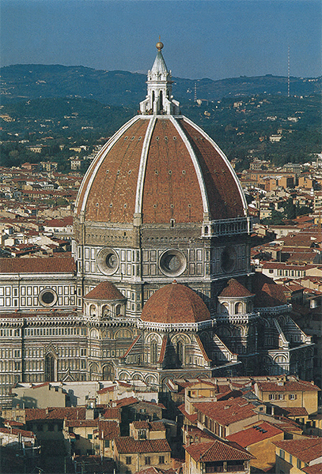
146 Filippo Brunelleschi, Duomo de Florencia (catedral), h. 1420-1436.
Lo que sigue siendo más sorprendente en lo conseguido por Brunelleschi es que realmente logró imponer este programa. Durante casi cinco siglos los arquitectos de Europa y de América siguieron sus pasos. Por dondequiera que vayamos en nuestras ciudades y villas encontraremos edificios en los que se han empleado formas clásicas tales como columnas y fachadas. Ha sido sólo en el siglo XX cuando los arquitectos empiezan a poner en duda el programa de Brunelleschi y a reaccionar contra la tradición arquitectónica renacentista, del mismo modo que ésta reaccionó contra la tradición gótica. Pero la mayoría de las casas que se construyen ahora, incluso aquellas que no tienen columnas ni adornos semejantes, aún conservan residuos de formas clásicas en las molduras sobre las puertas o en los encuadramientos de las ventanas, o en las proporciones del edificio. Si Brunelleschi se propuso crear la arquitectura de una era nueva, ciertamente lo consiguió.
La ilustración 147 muestra la fachada de una pequeña iglesia construida por Brunelleschi para la poderosa familia Pazzi, en Florencia. Observamos en seguida que tiene poco de común con cualquier templo clásico, pero menos todavía con las formas empleadas por los arquitectos góticos. Brunelleschi combinó columnas, pilastras y arcos en su propio estilo para conseguir un efecto de levedad y gracia distinto de todo lo realizado anteriormente. Detalles como el armazón de la puerta, con sus timpanillos clásicos, muestran cuán atentamente había estudiado Brunelleschi las ruinas de la antigüedad y edificios tales como el Panteón (ilustración 75). Compárese el modo en que se forma el arco y cómo se intercala en el piso superior con sus pilastras (semicolumnas planas). Apreciamos su estudio de las formas romanas con mayor claridad cuando entramos en la iglesia (ilustración 148). Nada en este brillante y bien proporcionado interior tiene que ver con los rasgos que los arquitectos góticos tenían en tan alta estima. No hay grandes ventanales ni ágiles pilares. En lugar de ellos, la blanca pared está subdividida en grises pilastras que comunican la idea de un orden clásico, aunque no desempeñen ninguna función real en la estructura del edificio. Brunelleschi sólo las puso allí para destacar la forma y las proporciones del interior.
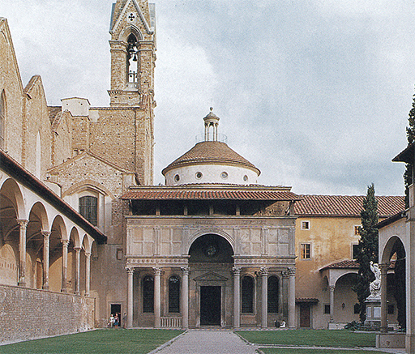
147 Filippo Brunelleschi, Capilla Pazzi, Florencia, h. 1430. Iglesia del Renacimiento temprano.
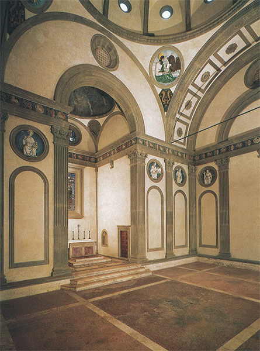
148 Filippo Brunelleschi. Interior de la capilla Pazzi, Florencia, h. 1430.
Brunelleschi no sólo fue el iniciador de la arquitectura del Renacimiento. Se cree que a él se le debe otro importante descubrimiento en el terreno del arte, que ha dominado también el de los siglos subsiguientes: la perspectiva. Hemos visto que ni los griegos, que comprendieron el escorzo, ni los pintores helenísticos, que sobresalieron al crear la ilusión de profundidad (ilustración 72), llegaron a conocer las leyes matemáticas por las cuales los objetos disminuyen de tamaño a medida que se alejan de nosotros. Recordemos que ningún artista clásico podía haber dibujado la famosa avenida de árboles retrocediendo en el cuadro hasta desvanecerse en el horizonte. Fue Brunelleschi quien proporcionó a los artistas los medios matemáticos de resolver este problema; y el apasionamiento a que dio origen entre sus amigos pintores debió de ser enorme. La ilustración 149 muestra una de las primeras pinturas ejecutadas de acuerdo con esas reglas matemáticas. Es una pintura mural de una iglesia florentina, y representa a la Santísima Trinidad con la Virgen y san Juan bajo la cruz, y los donantes —un anciano mercader y su esposa— arrodillados fuera. El artista Tomaso di Giovanni, que pintó esta obra, fue llamado Masaccio (1401-1428), que significa Tomás el Torpe. Debió ser un genio extraordinario, pues sabemos que murió cuando apenas tenía veintiocho años y que, por entonces, ya había producido una verdadera revolución en la pintura. Esta revolución no consistió solamente en el recurso técnico de la perspectiva pictórica, aunque ésta en sí debió constituir una novedad asombrosa al producirse. Podemos imaginarnos la sorpresa de los florentinos al descubrirse esta pintura mural, como si fuera un agujero en el muro a través del cual pudieran ver una nueva capilla en el moderno estilo de Brunelleschi. Pero quizá quedaron más asombrados todavía ante la simplicidad y la magnitud de las figuras encuadradas por esta nueva arquitectura. Si los florentinos esperaban algo a la manera del estilo internacional que estaba en boga lo mismo en Florencia que en cualquier otra parte de Europa, debieron quedar desilusionados. En vez de graciosa delicadeza, veían pesadas y macizas figuras; en vez de suaves curvas, sólidas formas angulares; y en vez de menudos detalles, como flores y piedras preciosas, no había más que un sepulcro con un esqueleto encima. Pero si el arte de Masaccio era menos agradable a la vista que las pinturas a las que estaban acostumbrados, era mucho más sincero y emotivo. Podemos observar que Masaccio admiraba la dramática grandiosidad de Giotto, aunque no le imitara. El ademán sencillo con que la Virgen señala al Cristo en la cruz es tan elocuente e impresionante porque es el único movimiento en el conjunto solemne de la pintura. Sus figuras, en verdad, parecen estatuas. Este efecto, más que cualquier otro, es el que Masaccio realzó mediante la perspectiva de los lincamientos en que encajó sus figuras. Nos parece que podemos tocarlas casi, y esta sensación es la que hace de ellas y de su mensaje algo nuevo para nosotros. Para el gran maestro del Renacimiento, los nuevos recursos y descubrimientos no fueron nunca un fin en sí mismos, sino que los utilizó para que penetrara más todavía en nuestro espíritu la significación del tema tratado.
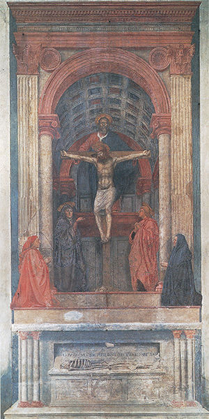
149 Masaccio, La Santísima Trinidad (con la Virgen, san Juan y los donantes), h. 1425-1428. Fresco, 667 x 317 cm; iglesia de Santa Maria Novella, Florencia.
El más grande escultor del círculo de Brunelleschi fue el maestro florentino Donato di Nicolò di Betto Bardi, Donatello (1386?-1466). Era quince años mayor que Masaccio, aunque vivió mucho más tiempo que él. La ilustración 151 muestra una obra de su juventud. Le fue encargada por el gremio de los armeros, a cuyo patrón, san Jorge, representa; la estatua fue destinada a una hornacina del exterior de la iglesia de San Miguel, en Florencia. Si volvemos la vista a las estatuas góticas del exterior de las grandes catedrales (ilustración 127), advertiremos cómo Donatello rompió completamente con el pasado. Estas estatuas góticas permanecen a los lados de los pórticos en hileras solemnes y apacibles como si fueran seres de otro mundo. El san Jorge de Donatello se mantiene con firmeza sobre el suelo, con los pies clavados en tierra resueltamente, como dispuesto a no ceder un palmo. Su rostro no tiene nada de la vaga y serena belleza de los santos medievales, sino que es todo energía y concentración (ilustración 150). Parece aguardar la llegada del monstruo para medir su fuerza, las manos descansando sobre el escudo, completamente tensa su actitud en una determinación de desafío. La estatua se ha hecho famosa como símbolo inigualable del valor y arrojo juveniles. Pero no es tan sólo la imaginación de Donatello lo más digno de admirar: su facultad de corporizar al santo caballeresco de espontánea y convincente manera, así como su criterio respecto al arte de la escultura revelan una concepción completamente nueva. A pesar de la sensación de vida y movimiento que la estatua comunica, sigue siendo precisa en su silueta y sólida como una roca. Al igual que la pintura de Masaccio, nos muestra que Donatello quiso sustituir las delicadezas y refinamientos de sus predecesores por una nueva y vigorosa observación del natural. Detalles como las manos o las cejas del santo revelan una completa independización de los modelos tradicionales; demuestran un nuevo e independiente estudio de las formas reales del cuerpo humano. Estos maestros florentinos de principios del siglo XV ya no se contentaban con repetir las viejas fórmulas manejadas por los artistas medievales. Como griegos y romanos, a los cuales admiraban, empezaron a estudiar el cuerpo humano en sus talleres y obradores tomando modelos o pidiendo a sus camaradas que posaran para ellos en las actitudes requeridas. Este nuevo método y este nuevo interesarse por las cosas son lo que hace parecer tan espontánea y natural la estatua de Donatello.
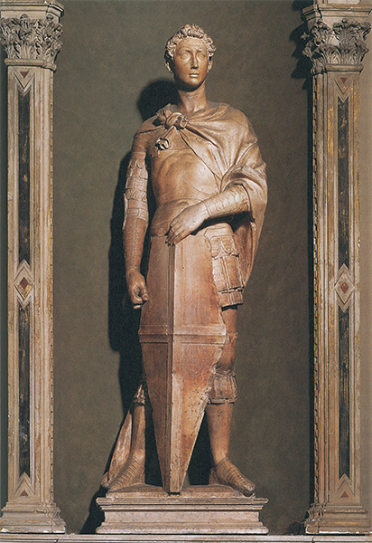
151 Donatello, San Jorge, h. 1415-1416. Mármol, 209 cm de altura; Museo Nacional del Bargello, Florencia.
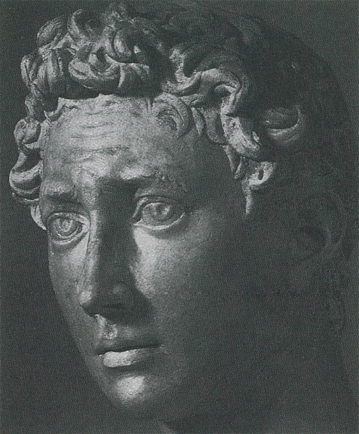
150 Detalle de la ilustración 151.
Donatello adquirió gran fama durante su vida. Al igual que Giotto una centuria antes, fue llamado con frecuencia desde otras ciudades para acrecentar su magnificencia y belleza. La ilustración 152 muestra un relieve en bronce realizado para la pila bautismal de Siena diez años después de San Jorge, en 1427. Tal como la pila medieval de la ilustración 118, ilustra una escena de la vida de san Juan Bautista. Muestra el tremendo momento en que Salomé, la hija del rey Herodes, pide la cabeza de san Juan como recompensa a su danza, obteniéndola. Nos introducimos en el comedor regio y, más allá, en la galería que ocupan los músicos y en una sucesión de salas y escaleras interiores. El verdugo acaba de entrar y se arrodilla ante el Rey trayendo la cabeza del santo sobre una bandeja. El Rey se echa hacia atrás y levanta las manos en un gesto de horror; los niños gritan y huyen; la madre de Salomé, instigadora del crimen, está hablando al Rey para tratar de justificar el homicidio. Hay un gran hueco entre ella y los horrorizados huéspedes. Uno de éstos se tapa los ojos con la mano; otros rodean a Salomé, que parece acabar de interrumpir su danza. No hace falta explicar en todos sus detalles las modalidades nuevas en una obra como ésta de Donatello. Todas lo eran. A la gente acostumbrada a las claras y graciosas representaciones del arte gótico, la manera de ser tratado un tema por Donatello debió impresionarles profundamente. Según el nuevo estilo, no hacía falta formar un agradable esquema sino producir la sensación de un repentino caos. Como las figuras de Masaccio, las de Donatello son rígidas y angulosas en sus movimientos. Sus ademanes son violentos, y en ellas no se hace nada por mitigar el horror del asunto. A sus contemporáneos, una escena semejante debió de parecerles terriblemente viva.
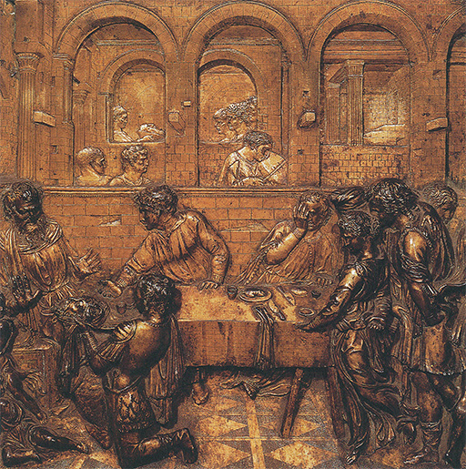
152 Donatello, El festín de Herodes, 1423-1427. Bronce dorado, 60 x 60 cm; relieve de la pila bautismal del baptisterio, catedral de Siena.
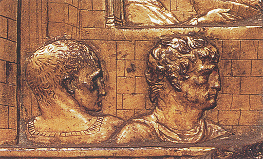
153 Detalle de la ilustración 152.
El nuevo arte de la perspectiva aumentó aún más la sensación de realidad. Donatello debió empezar por preguntarse a sí mismo: «¿Qué tuvo que suceder cuando la cabeza del santo fue llevada al comedor?» Hizo cuanto pudo por representar un palacio romano, tal como sería aquel en el que el hecho tuvo lugar, y por elegir tipos romanos para las figuras del fondo (ilustración 153). Podemos ver claramente, en efecto, que Donatello, como su amigo Brunelleschi, había iniciado por aquel entonces un sistemático estudio de las reliquias monumentales de Roma, para ayudarse a conseguir el renacimiento del arte. Pero sería enteramente equivocado, no obstante, imaginar que este estudio del arte griego y romano originó el Renacimiento. Más bien fue al contrario. Los artistas que vivían en torno a Brunelleschi suspiraban tan apasionadamente por un renacer del arte que se volvieron hacia la naturaleza, la ciencia y las reliquias de la antigüedad para conseguir sus nuevos propósitos.
El dominio de la ciencia y del conocimiento del arte clásico fue durante algún tiempo posesión exclusiva de los artistas italianos del Renacimiento. Pero la voluntad apasionada de crear un nuevo arte, que fuese más fiel a la naturaleza que todo lo que se había visto hasta entonces, inspiró también a otros artistas nórdicos pertenecientes al mismo momento histórico.
Así como la generación de Donatello se cansó en Florencia de las sutilezas y refinamientos del estilo internacional gótico, aspirando a crear figuras más vigorosas y austeras, así también un escultor de más allá de los Alpes se esforzó por lograr un arte más lleno de vida y más realista que el de las delicadas obras de sus predecesores. Este escultor era Claus Sluter, que trabajó entre 1380 y 1405 en Dijón, capital entonces del próspero y opulento Ducado de Borgoña. Su obra más famosa es un grupo de profetas que perteneció al pedestal de un gran crucifijo que señalaba la fuente de un famoso lugar de peregrinaje (ilustración 154). Figuran en este pedestal los hombres cuyas palabras fueron interpretadas como predicción de la pasión. Cada uno de ellos sostiene en su mano un gran libro o pergamino sobre el que están escritas esas palabras, y parecen meditar acerca de la tragedia que ha de venir. No son ya las solemnes y rígidas figuras que flanquean los pórticos de las catedrales góticas (ilustración 127). Se diferencian tanto de esas obras anteriores como lo hace San Jorge, de Donatello. El que lleva un turbante en la cabeza es Daniel; el de la cabeza destocada, Isaías. Tal como se hallan frente a nosotros, mayores que el natural, resplandeciendo todavía con su colorido y sus dorados, menos parecen estatuas que personajes vivos pertenecientes a uno de los misterios medievales en el momento de recitar sus papeles. Pero con todo y su sorprendente sensación de vida, no debemos olvidar el sentido artístico con que Sluter creó estas macizas figuras, con el flamear de sus ropajes y la dignidad de su aspecto.
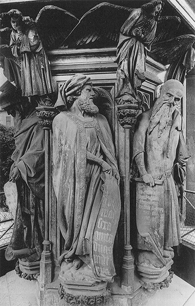
154 Claus Sluter, Los profetas Daniel e Isaías, 1396-1404. Procedente de La fuente de Moisés; piedra caliza, 360 cm de altura (base excluida); cartuja de Champmol, Dijón.
Aun cuando no había de ser un escultor quien llevara a su término, en el norte, la conquista de la realidad: el artista cuyos descubrimientos revolucionarios se dirigieron desde un principio a representar algo enteramente nuevo fue el pintor Jan van Eyck (1390?-1441). Al igual que Sluter, estuvo relacionado con la corte de los duques de Borgoña, pero trabajó principalmente en la zona de los Países Bajos denominada Bélgica. Su obra más famosa es un gran retablo con muchas escenas de la ciudad de Gante. Se dice que éste empezó a ser pintado por el hermano mayor de Jan, Hubert, del que poco se sabe, y que fue concluido por Jan en 1432, en la misma década que vio terminar las grandes obras de Masaccio y Donatello ya descritas.
Pese a que las diferencias son obvias, hay ciertas similitudes entre el fresco de Masaccio en Florencia (ilustración 149) y este altar pintado para una iglesia de la lejana Flandes. Ambos muestran al devoto donante y a su esposa rezando a los lados (ilustración 155), y ambos se centran en una gran imagen simbólica —la de la Santísima Trinidad en el fresco, y, en el altar, la de la visión mística de la adoración del Cordero, en la que éste, por supuesto, simboliza al Cristo (ilustración 156). La composición está basada principalmente en un pasaje del Apocalipsis (7, 9): «Después miré y había una muchedumbre inmensa, que nadie podría contar, de toda nación, razas, pueblos y lenguas, de pie delante del trono y del Cordero…», un texto que la Iglesia relaciona con la festividad de Todos los Santos, a la que la pintura hace más alusiones. Arriba observamos al Dios, tan majestuoso como el de Masaccio, pero entronizado con el esplendor de un papa, entre la Virgen y san Juan Bautista, quien fue el primero en llamar al Cristo el Cordero de Dios.
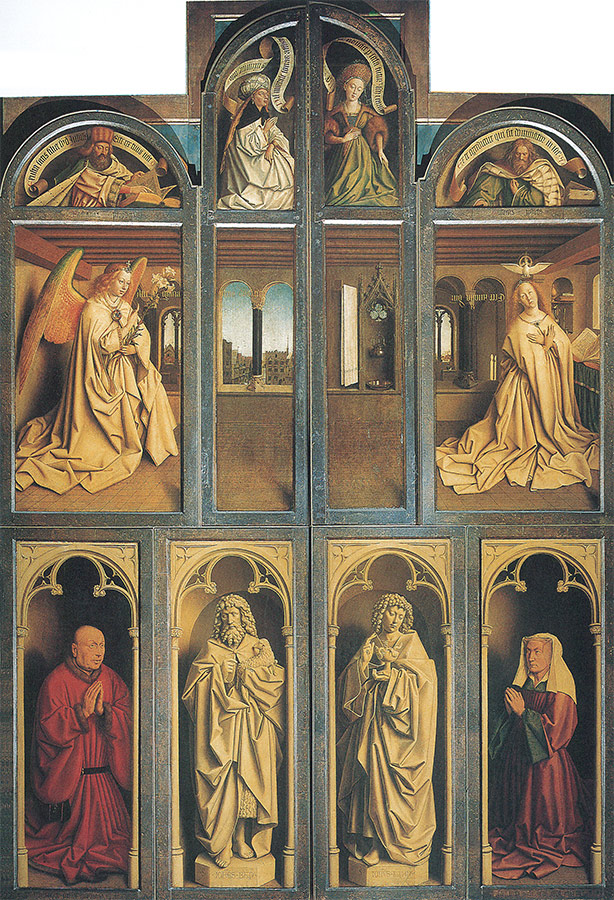
155 Jan van Eyck, El altar de Gante (con laterales cerrados), 1432. Óleo sobre tabla, cada panel 146,2 x 51,4 cm; catedral de St. Bavo, Gante.
Al igual que en nuestro desplegable (ilustración 156), el altar, con su multitud de imágenes, podía mostrarse abierto, lo que ocurría en los días de fiesta, momento en que sus colores vibrantes eran revelados; o cerrado (entre semana), cuando presentaba un aspecto más sobrio (ilustración 155). Aquí, el artista representó a san Juan Bautista y a san Juan Evangelista como estatuas, de igual modo que Giotto había representado las figuras de las virtudes y los vicios en la capilla Dell’Arena (ilustración 134). Arriba se nos muestra la escena familiar de la anunciación, y solamente hemos de mirar atrás de nuevo, al maravilloso retablo de Simone Martini y Lippo Memmi —pintado cien años antes (ilustración 141)—, para obtener una primera impresión de la novedosa y realista aproximación de Van Eyck a la historia sagrada.
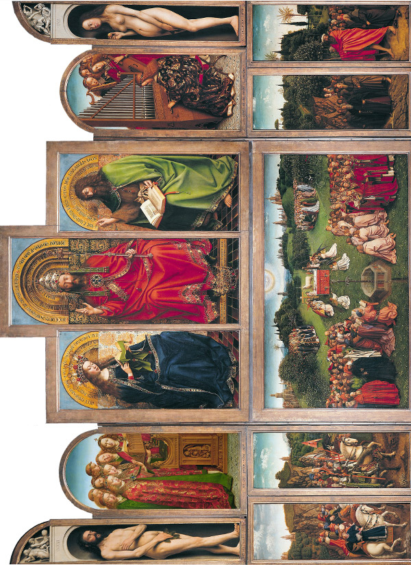
156 El altar de Gante (con laterales abiertos).
La manifestación más sorprendente de su nueva concepción del arte la reservó, sin embargo, para las pinturas interiores: las figuras de Adán y Eva tras la caída. La Biblia relata que solamente después de haber comido de la fruta del árbol del conocimiento ambos supieron que estaban desnudos. En cueros vivos, desde luego, pese a las hojas de higuera que sostienen en las manos. Aquí no podemos hallar ningún paralelismo con los maestros del Renacimiento temprano en Italia, pues ellos nunca acabaron de abandonar las tradiciones del arte griego y romano. Recordemos que los antiguos habían idealizado la figura humana en obras como Apolo de Belvedere o Venus de Milo (ilustraciones 64 y 65). Jan van Eyck no quería saber nada de todo eso. Debió situarse ante modelos desnudos y pintarlos tan concienzudamente que las generaciones posteriores se mostraron algo escandalizadas ante tanta honestidad. Y no es que el artista no fuera sensible a la belleza. Está claro que también disfrutaba evocando los esplendores del cielo tanto como el maestro del Díptico de Wilton (ilustración 143) lo había hecho una generación antes. Pero observemos de nuevo la diferencia, la paciencia y la maestría con que estudió y pintó los preciosos brocados que vestían los ángeles músicos y el brillo de las joyas situadas por todas partes. En este aspecto, los Van Eyck no rompieron tan radicalmente con las tradiciones del estilo internacional como lo hizo Masaccio. Más bien siguieron los métodos de los hermanos De Limburgo y los condujeron a un grado de perfección tal que dejaron atrás las ideas del arte medieval. Ellos, como otros maestros góticos de su época, se complacieron en amontonar en sus pinturas pormenores encantadores y delicados frutos de la observación; se enorgullecían de mostrar su destreza al pintar flores y animales, edificios, trajes vistosos, joyas, y en ofrecer una verdadera fiesta para los ojos. Hemos visto que no se preocupaban mucho de la similitud de las figuras y los paisajes, y que sus diseños y perspectivas no eran, por ello, muy verosímiles. No puede decirse lo mismo de los cuadros de Van Eyck. Su observación de la naturaleza es aún más paciente; su conocimiento de los detalles, más exacto. Los árboles y los edificios del fondo muestran claramente su diversidad. Los árboles de los hermanos De Limburgo, como recordamos, eran más bien esquemáticos y convencionales (ilustración 144). Su paisaje se parece más a un tapiz que a un escenario real. Todo esto es por completo diferente en el cuadro de Van Eyck. En los detalles que se muestran en la ilustración 157 tenemos árboles reales y un paisaje auténtico prolongándose hacia la ciudad y el castillo del horizonte. La paciencia infinita con que están pintadas las hierbas sobre las rocas, y las flores entre los riscos, no tienen comparación con los últimos términos de la miniatura de los De Limburgo. Y lo que decimos del paisaje vale también para las figuras. Van Eyck parece haber estado tan atento a reproducir cada menudo detalle en su cuadro que casi nos creemos capaces de contar una por una las crines de los caballos o de las guarniciones de piel que ostentan en sus trajes los caballeros. El caballo de la miniatura de los De Limburgo parece, casi, un caballito de madera. El de Van Eyck es muy semejante en su forma y actitud, pero está vivo. Podemos ver el reflejo de la luz en su ojo y las arrugas que se le forman en la piel; mientras que el caballo anterior casi parece plano, éste de Van Eyck tiene miembros redondos, modelados en luz y sombra.
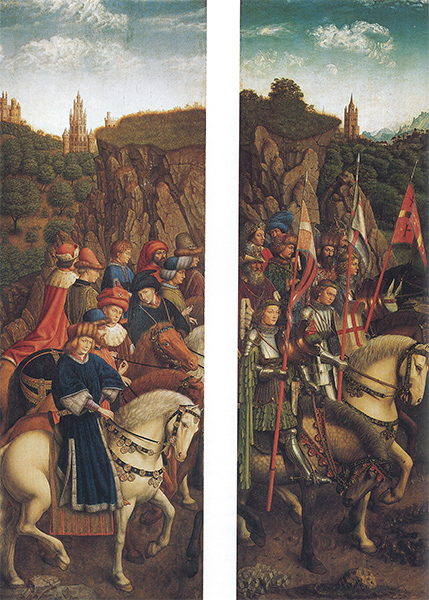
157 Detalles de la ilustración 156.
Puede parecer trivial ponerse a rebuscar todos estos pequeños detalles y elogiar a un gran artista por la paciencia con que ha observado y copiado del natural. Sería equivocado ciertamente considerar menos grande la obra de los hermanos De Limburgo o de cualquier otro pintor por faltarle tan fidedigna imitación de la naturaleza. Pero si queremos comprender de qué modo se desarrolló el arte nórdico, tenemos que apreciar debidamente esta paciencia y cuidado infinitos de Jan van Eyck. Los artistas meridionales de su generación, los maestros florentinos del círculo de Brunelleschi, desarrollaron un método por medio del cual la naturaleza podía ser representada en un cuadro casi con científica exactitud. Comenzaban trazando la armazón de las líneas de la perspectiva y plasmaban sobre ellas el cuerpo humano mediante sus conocimientos de la anatomía y las leyes del escorzo. Van Eyck emprendió el camino opuesto. Logró la ilusión del natural añadiendo pacientemente un detalle tras otro hasta que todo el cuadro se convirtiera en una especie de espejo del mundo visible. Esta diferencia entre el arte del norte y el italiano tuvo importancia durante muchos años. Cabe conjeturar que toda obra que se destaque en la representación de la hermosa superficie de las cosas, flores, joyas o edificios, será de un artista nórdico, flamenco probablemente; mientras que un cuadro de acusados perfiles, clara perspectiva y seguro dominio de la belleza del cuerpo humano, será italiano.
Para llevar a cabo su propósito de sostener el espejo de la realidad en todos sus detalles, Van Eyck tuvo que perfeccionar la técnica de la pintura. Fue el inventor de la pintura al óleo. Se ha discutido mucho acerca de la verdad y el exacto sentido de esta afirmación, pero los pormenores importan relativamente poco. No se trató de un descubrimiento como el de la perspectiva, que constituyó algo enteramente nuevo. Lo que él consiguió fue una prescripción nueva para la preparación de los colores antes de ser colocados sobre la tabla. Los pintores de entonces no compraban los colores ya preparados en tubos o en cajas, sino que tenían que prepararse sus propios pigmentos, obtenidos en su mayoría de plantas o minerales. Reducían éstos a polvo entre dos piedras —o los hacían moler por sus aprendices— y, antes de usarlos, les añadían cierta cantidad de líquido para formar con el polvo una especie de pasta. Existieron diversos modos de hacer esto; durante todo el medievo, el principal ingrediente de dicho líquido había sido el huevo, que daba excelentes resultados, pero que tenía el inconveniente de secarse muy deprisa. El procedimiento de pintar con colores preparados de este modo se denominó témpera. Parece ser que Jan van Eyck se hallaba descontento con tal fórmula, ya que no le permitía conseguir transiciones suaves fundiendo unos colores con otros. Si emplease aceite en vez de huevo, trabajaría mucho más lentamente y con mayor exactitud; podía hacer colores transparentes para ser aplicados por capas; podía realzar las partes más luminosas con el pincel afilado y conseguir esos milagros de exactitud que asombraron a sus contemporáneos y que condujeron a una rápida aceptación de la pintura al óleo como el más adecuado vehículo del color.
El arte de Van Eyck consiguió tal vez su máximo triunfo en la pintura de retratos. Uno de los más famosos es el de la ilustración 158, que representa a un comerciante italiano, Giovanni Arnolfini, llegado a los Países Bajos en viaje de negocios en compañía de su reciente esposa Jeanne de Chenany. En su estilo, es una obra tan nueva y revolucionaria como las de Donatello y Masaccio en Italia. Un sencillo rincón del mundo real ha quedado fijado de pronto sobre el panel como por arte de magia. Aquí está todo: la alfombra y las zapatillas, el rosario colgado en la pared, el pequeño sacudidor al lado de la cama y unas frutas en el antepecho de la ventana. Es como si pudiéramos hacer una visita a los Arnolfini en su casa. El cuadro, probablemente, representa un momento solemne de sus vidas: sus esponsales. La recién desposada acaba de poner su mano derecha en la izquierda de Arnolfini, y éste está levantando su derecha para colocarla sobre aquéllas en señal de su unión. Seguramente se llamó al pintor para que registrara este importante momento como testigo, del mismo modo que puede ser llamado un notario a declarar que se ha hallado presente en un acto solemne de la misma índole. Esto nos explicaría la razón por la cual el maestro colocó su nombre en lugar destacado con las palabras latinas Johannes de eyck fuit hic (Jan van Eyck estuvo presente). En el espejo, al fondo de la habitación, vemos toda la escena reflejada y, al parecer, también la imagen del pintor y testigo (ilustración 159). No sabemos si fue el mercader italiano o el artista nórdico quien concibió la idea de hacer este uso de la nueva clase de pintura que puede ser comparado al empleo legal de una fotografía oportunamente aportada por un testigo. Pero sea quien quiera, fue con seguridad alguien que comprendió rápidamente las enormes posibilidades que yacían en la nueva modalidad pictórica de Van Eyck. Por vez primera en la historia, el artista se convertía en un perfecto testigo ocular en el verdadero sentido de la palabra.
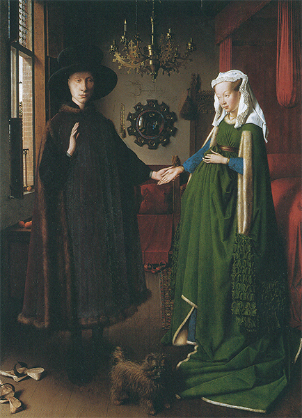
158 Jan van Eyck, El matrimonio Arnolfini, 1434. Óleo sobre tabla 81,8 x 59,7 cm; National Gallery, Londres.
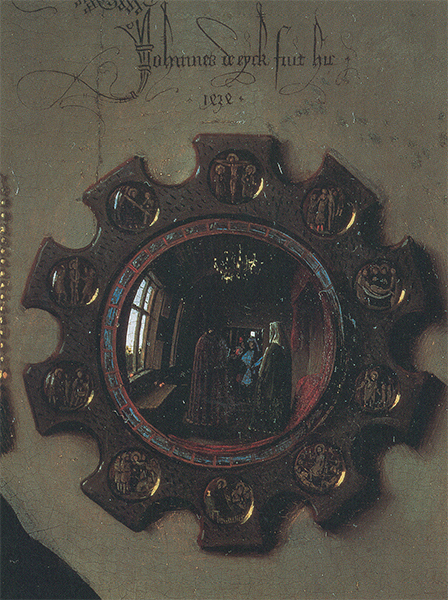
159 Detalle de la ilustración 158.
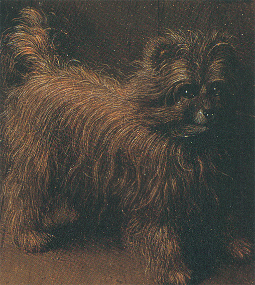
160 Detalle de la ilustración 158.
En este intento de reflejar la naturaleza tal como se muestra a los ojos, Van Eyck, como Masaccio, dejó a un lado los esquemas armónicos y las curvas sinuosas del estilo gótico. Para algunos, sus figuras aún pueden parecer rígidas en comparación con la gracia exquisita de pinturas como las del Díptico de Wilton (ilustración 143). Pero en todas partes los artistas europeos de aquella generación desafiaron las viejas ideas acerca de la belleza y turbaron a muchas personas de edad más avanzada. Uno de los más radicales de esos innovadores fue un pintor suizo llamado Konrad Witz (1400?-1446?). La ilustración 161 pertenece a un altar que pintó para Ginebra en 1444. Está dedicado a san Pedro y representa el encuentro del santo con el Cristo después de la resurrección, tal como se narra en el evangelio de Juan (21). Algunos de los apóstoles y sus compañeros habían salido a pescar en el Tiberíades, pero no capturaron nada. Al amanecer, el Cristo estaba de pie en la orilla, pero no le reconocieron. Les dijo que lanzaran la red al lado derecho de la barca, que volvió tan colmada de peces que ellos fueron incapaces de sacarla del agua. En aquel instante uno de ellos dijo: «Es el Señor», y cuando san Pedro lo oyó «se puso el vestido (pues estaba desnudo), y se lanzó al mar. Los demás discípulos vinieron en la barca», tras lo cual comieron con el Cristo. Si le hubieran pedido a un pintor medieval que ilustrara este suceso milagroso, seguramente se habría contentado con una hilera convencional de líneas onduladas para dar a entender el lago Tiberíades. Pero Witz quiso convertir en familiar para los burgueses de Ginebra la escena del Cristo de pie en la orilla, y para ello no pintó un lago, sino el lago que ellos conocían, el de Ginebra, con el gran monte Salève irguiéndose al fondo. Se trata de un paisaje real que cualquiera puede contemplar, que todavía existe, y que aún se parece mucho al del cuadro. Es ésta quizá la primera representación exacta, el primer «retrato» de un paisaje auténtico que jamás se haya intentado. Sobre este lago, Witz pintó pescadores reales; no los sublimados apóstoles de obras antiguas, sino toscos hombres de pueblo, ocupados con sus aparejos de pesca y que procuraban desmañadamente que la barca no volcara. San Pedro, que está en el agua, parece algo desvalido, y seguramente fue así como se sintió. Sólo el Cristo se mantiene de pie sosegada y firmemente. Su sólida figura recuerda las del gran fresco de Masaccio (ilustración 149). Debió ser muy emocionante para los fieles de Ginebra mirar el altar por primera vez y ver que los apóstoles eran hombres como ellos, pescando en su propio lago, así como al Cristo resucitado apareciéndoseles milagrosamente en sus familiares orillas para ayudarles y consolarles.
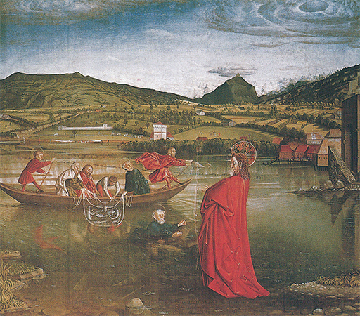
161 Konrad Witz, La pesca milagrosa, 1444. Panel de un altar; óleo sobre tabla; 132 x 154 cm; Museo de Arte y de Historia, Ginebra.
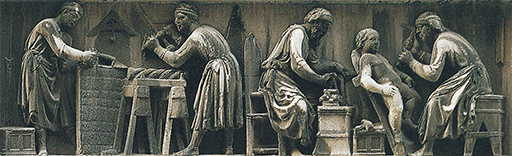
Nanni di Banco, Albañil y escultores trabajando, h. 1408. Base de una escultura de mármol; Or San Michele, Florencia.